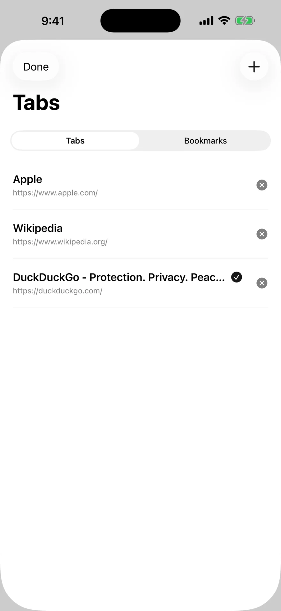
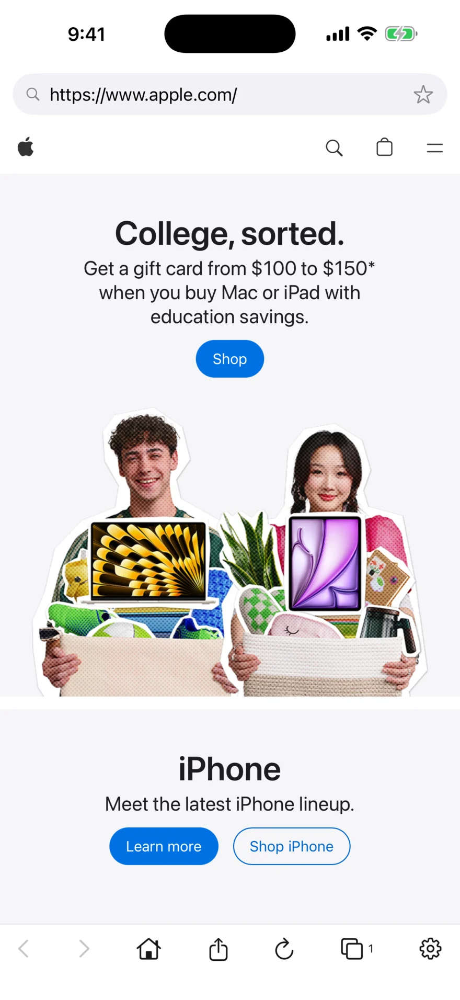
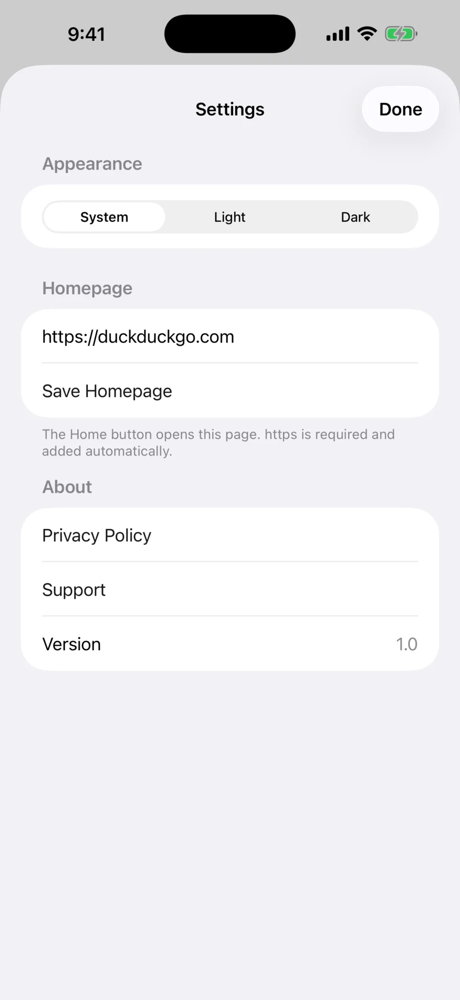
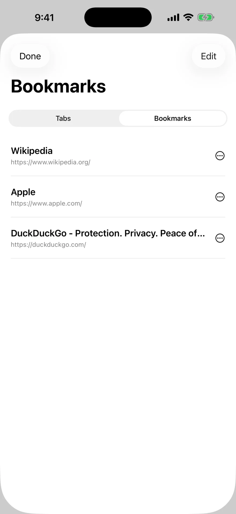

App Store
The public release link belongs here as soon as Apple approves the listing.
A browser from Notavello
Koga keeps the essentials close: search, tabs, bookmarks, sharing, appearance, and a homepage you control.
No direct IPA download is offered. Public installs will use the App Store or TestFlight.



Availability
The public release link belongs here as soon as Apple approves the listing.
A public TestFlight link can be enabled for beta testing before the App Store release.
Koga does not currently offer direct website installation. Use an Apple-managed release route.
The essentials
Koga uses familiar iPhone patterns without filling the screen with extras.
Everyday browsing
Move back and forward, return home, share, reload, open tabs, or adjust settings from the bottom toolbar.
Tabs + bookmarks
Switch between open pages, start a new tab, and keep favorite sites in the same focused sheet.

Make it yours
Choose an appearance, set the page opened by Home, and keep privacy and support close.
Real app screens
The supplied iPhone captures are used directly; the website framing is decorative.
Questions
Not at present. The intended public paths are the App Store and, during beta testing, TestFlight.
The goals are shared, but the interface and help pages are platform-specific. Koga for iPhone follows iOS controls and uses Apple’s web-view technology.
See the dedicated Koga for iPhone help page. It is separate from the Android guide.